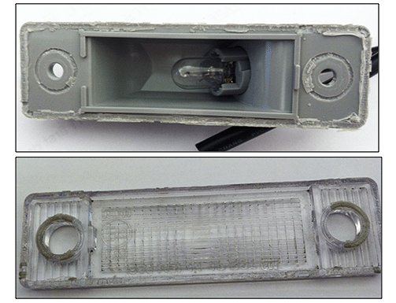
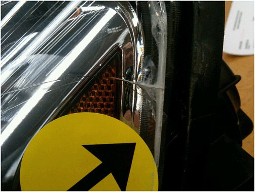
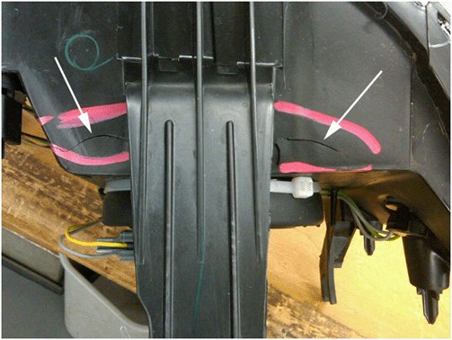
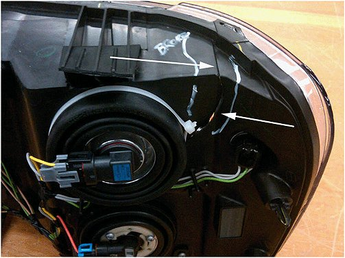
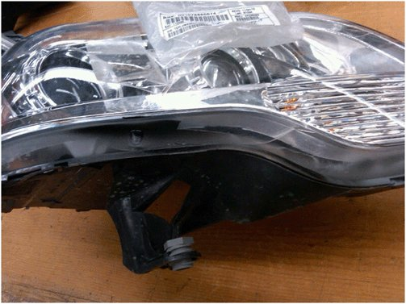
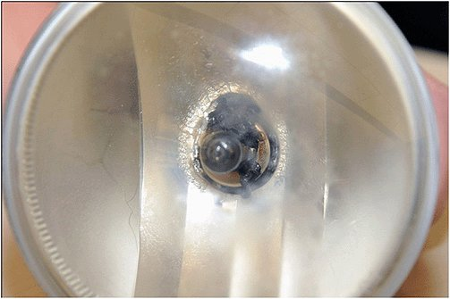

Lighting - Lamp Polycarbonate Lens Damage Prevention
INFORMATIONBulletin No.: 02-08-42-001F
Date: February 10, 2012
Subject: Headlamp, Tail Lamp, License Lamp or Fog/Driving Lamp Damage
Models:
2013 and Prior GM Passenger Cars and Trucks
Supercede:
This bulletin is being revised to add the 2013 model year and to add the license lamp information. Please discard Corporate Bulletin Number 02-08-42-001E (Section 08 - Body and Accessories).
Warranty Submission Guidelines
When submitting a warranty claim for a headlamp, tail lamp, license lamp or fog lamp replacement under warranty, please be aware of the following statement as printed in the General Motor New Vehicle Warranty.
"Lights, lenses, mirrors, paint, grill, moldings and trim are not covered for cracks, chips, scratches, dents, dings and punctures or tears as a result of impact with other objects or road hazards."
Non-Warrantable Conditions
This bulletin is being published to assist with the identification of issues that are not considered warrantable.
All Lamp Assemblies
Chemical Damage to exterior polycarbonate headlamp and license lamp lenses. Note that most late model vehicle headlamps and some license lamps have this type of lens. This material is used because of its temperature and high impact resistance.
A variety of chemicals can cause crazing or cracking of the polycarbonate lens. Headlamp and other exterior lenses are very sensitive. Care should be exercised to avoid contact with all exterior lenses when treating a vehicle with any type of chemical, such as those recommended for rail dust removal. Also rubbing compound, grease/tar/oil removers, tire cleaners, prep solvents for pin stripping, cleaner/waxes, undiluted washer solvent, alcohol and even car wash soaps in too high a concentration may also damage the lens. The use of these products on the lens can result in the need to replace the entire headlamp assembly.

- The license lamp above exhibits a separation of the bond of the lens and housing, and a clouding of the polycarbonate lens. This condition was the result of applying chrome cleaner to the rear bumper and license lamp.

- This lamp shows some effects of chemical damage. Notice the milky color along the edge and the fracture. This was caused by a solvent used to prep the body for pin striping.
Warning
Use only lukewarm or cold water, a soft cloth and a car washing soap to clean exterior lamps and lenses.
Overheating damage is most often presented as imperfections in the lens surface. Crazing or deformations of the lens may occur if a shop mat or fender cover is draped over the fender and covers a portion or all of the headlamp assembly while the DRL or headlamps are on. Covering the lamps restricts the amount of heat dissipated by the headlamps.
Warning
Care should be taken to not cover headlamps with shop mats or fender covers if the vehicle is being serviced while the headlamps or DRLs are illuminated. Covering an illuminated lamp can cause excessive heat buildup and crazing/deformation of the lens may occur. The degradation of the lens can be unnoticeable at first and eventually become hairline cracks in the lens. In extreme cases, it could cause the lens to deform. This damage can also be caused by aftermarket shields that are often tinted in color.
Notice
License lamps and headlamps damaged by chemicals, improper cleaning, or overheating due to being covered are not covered under the new vehicle warranty.
Impact Damage is most often presented as the assembly is holding moisture, is inoperative, or blemished. Today's acrylic headlamp lenses are very tough and will withstand normal stone strikes without damage. They are also tough enough to not show witness marks of impacts severe enough to damage the rear housing. This damage is often revealed through close visual inspection once the lamp is removed. Broken mounting tabs, rear housing fractures, and loose components inside the lamp assembly are evidence if impact damage. When writing up these concerns never assume it will automatically be a warranty repair. Inspection of the lamp assembly, once removed from the vehicle, will be required to assess warrantability.

This housing is cracked across the top of the housing just below the mounting tab. Not shown is the dent at the upper edge of the lens where it impacted an object.

This housing shows a broken upper mounting tab and a fracture in the rear housing. This lamp had no visible marks on the lens.

This lamp shows paint over spray along the lower edge where it would marry to the front fascia. The lower mounting tabs were also all fractured at the housing due to impact.
Notice
Headlamps damaged due to impact are not covered under the new vehicle warranty.
Non-GM Headlamp, Tail Lamp and Fog Lamp Assemblies
Many companies outside of General Motors are manufacturing lamp assemblies that look very similar to original equipment. They target high volume programs like, but not limited to, Impala, Malibu, and Full Size Truck. These lamps are most often presented by customers as holding moisture or for inoperative bulbs due to corroded electrical connections. It appears these non OE lamps get installed on vehicles as part of a collision repair. Most likely the customer has no idea they are not original equipment, as the initial appearance is generally good. Obviously, these parts are not covered by warranty. Some of the common company names seen on these lamps are Eagle Eyes and Depo.

This fog lamp was returned for retaining moisture. As you can see it is marked with the Depo brand (it is also called out on the front lens).
The most reliable way to identify a non OE part is to compare it to the replacement service part or a like vehicle. Many do have the application called out on the part with the letters GM being present. Notice that they almost never underscore it, as that would be a trademark violation. They often use substandard wiring, sockets, vent patches and unsealed connectors.
Heat Damaged Fog and Head Lamp Assemblies Caused By High Output Bulbs
Another trend being seen is the installation of bulbs that have a higher output than the original equipment. Because the bulb output is higher, the operating temperature is also higher. This excessive heat can melt the socket, housing, or lens. Because these bulbs burn hotter and brighter, they also have a reduced service life. These bulbs are different in appearance than the original equipment. Some have blue tint on the bulb and others are clear. If in doubt, the bulb number should match the GM service part.

Notice:
When servicing any exterior lighting assembly, be sure to transfer any electrical connection seals to the new part. They are often on the body side of the harness connection, but may have stayed on the part being replaced. If not transferred to the new part, the connection may corrode due to water entry.
Notice:
Headlamps or fog lamps damaged by the use of high output bulbs are not covered under the new vehicle warranty.

Disclaimer